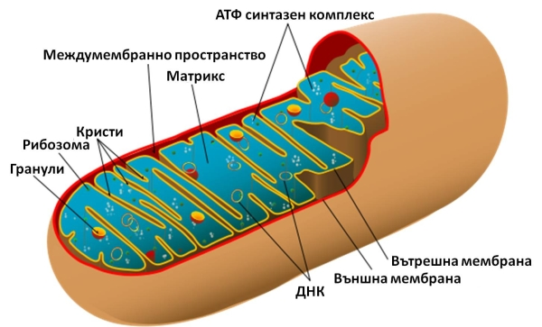
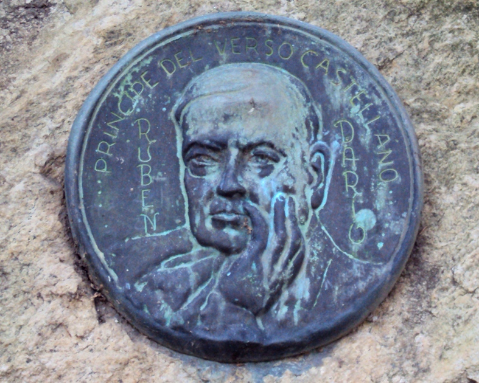
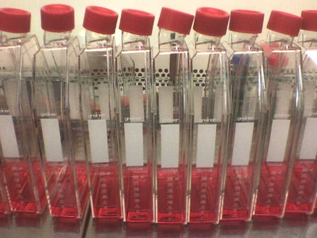

Lula.
diario de la mañana — el mundo, tu ciudad y lo que te asombra
Buen día. Domingo fresco, de 11° a 18°, con chaparrones a la mañana y cielo cerrándose después: llevá campera al hockey. Edición lenta, para leer de a ratos. Hoy vota Brasil, así que el resumen de la semana arranca por ahí. La ciencia es corta y linda: cómo una mitocondria rota termina decidiendo qué genes se prenden en el núcleo, por una vía que es pura bioquímica de primer año usada para algo que no te esperás. Y el clásico de hoy son trece versos de Rubén Darío que no necesitan traducción.
- La semana en seis titulares4'
- Ciencia: la mitocondria que habla con el núcleo4'
- Un clásico: Rubén Darío3'
- La palabra del día1'
- Le français: repaso de la semana2'
- El asombro de la semana2'
- Pasatiempo: sudoku difícil20'
- Cuaderno: repaso y quiz3'
Lo que pasó mientras estudiabas
Hoy vota Brasil. Unos 159 millones de personas eligen entre Lula da Silva y Flávio Bolsonaro, que en la primera vuelta sacaron 45,06 % y 47,11 %. Las encuestas dan una diferencia mínima, con Flávio apenas adelante. Hay tensión diplomática anticipada: en Brasilia manejan la hipótesis de que el gobierno argentino no reconozca un eventual triunfo de Lula. Los brasileños que viven acá votan hoy de 8 a 17 en la embajada, Cerrito 1350.
Empezó la COP17 de biodiversidad en Ereván, la primera revisión global de las 23 metas de Kunming-Montreal. Llegó junto con un trabajo de Nature que rehace la cuenta: el planeta protegería 26,81 % de la superficie terrestre y no 18,5 %, si se cuentan las tierras que conservan de hecho sin estar declaradas. La mala noticia del mismo paper: lo protegido sigue sesgado hacia los ecosistemas que a nadie le servían.
Ormuz, otra vez. Irán dijo haber atacado cuatro buques en el Golfo Pérsico y otros tres chocaron con minas. El tránsito de petroleros quedó en torno al 74 % del previo al conflicto y el crudo siguió alto. Macron cerró una gira por el Golfo consiguiendo acuerdos de gasoil para Francia.
La economía argentina se frenó. La actividad de agosto dio un avance casi nulo después de caer 2,8 % en julio, lo que deja al tercer trimestre al borde de la recesión técnica. El riesgo país superó los 700 puntos —venía de un mínimo de 403 en julio— y los bonos en dólares fueron los de peor desempeño entre los emergentes. Milei lo atribuyó a un «shock externo» y viajó a Madrid.
Francia sigue en la calle. Después del sábado con 1.800 detenidos y el palacio municipal de Limoges incendiado, el gobierno recibió a los sindicatos y se preparó para nuevas marchas. La huelga general está convocada para el 5 de noviembre.
Y la Filarmónica de Berlín tocó en el Colón por primera vez en 26 años, con Kirill Petrenko. El viernes el teatro transmitió el último concierto gratis por internet.
Y en ciencia, esta semana Lula te contó…
Macrófagos del pulmón entrenados por un parásito que protegen de la gripe sin bajar la carga viral · un GPCR que le mide el quorum a un hongo del trigo · la planta inundada que sobrevive al rescate leyendo al revés su sensor de oxígeno · la cuenta nueva de lo protegido en el planeta · dos bacterias que juntas matan neuronas del intestino · y doce años de actigrafía midiendo cuánto sueño nos sacó la luz eléctrica.
Una mitocondria rota que decide qué genes se prenden
De qué estamos hablando: una célula senescente deja de dividirse pero no se muere, y empieza a secretar un cóctel de citoquinas, quimioquinas y proteasas que inflama todo a su alrededor. Eso se llama SASP (fenotipo secretor asociado a senescencia) y es, hoy, uno de los grandes sospechosos del envejecimiento. Este trabajo de Nature —de los laboratorios de Peter Adams (Sanford Burnham Prebys) y João Passos (Mayo Clinic), con Martini como primera autora— muestra que el SASP se controla desde un lugar inesperado: el metabolismo de la mitocondria.

Quién es quién
- SLC25A1: el transportador que saca citrato de la mitocondria al citosol. Es el puente entre el ciclo de Krebs y el resto de la célula.
- ACLY (ATP-citrato liasa): la enzima que, ya en el citosol, parte ese citrato y produce acetil-CoA.
- Acetil-CoA e histonas: el acetil-CoA citosólico y nuclear es el donante de grupos acetilo para acetilar histonas. Más acetilación, cromatina más abierta, más transcripción. O sea: el estado metabólico de la célula se traduce, literalmente, en qué tan accesible está el ADN.
Qué encontraron
- Las células senescentes aumentan la exportación de citrato y con eso suben el acetil-CoA citosólico, lo que mantiene abierta la cromatina en los loci de los genes inflamatorios.
- Bloquear SLC25A1 bajó la acetilación de histonas en esos loci y apagó buena parte del SASP.
- En ratones viejos, inhibir SLC25A1 redujo la inflamación y mejoró indicadores de salud.
- El detalle clave: el bloqueo no revirtió el arresto del ciclo celular. Es decir, apaga lo que la célula senescente le hace al vecindario sin devolverle la capacidad de dividirse, que es justo lo que no querés tocar.
La conexión con lo que estudiás
Dos cosas. Una: esto es señalización retrógrada mitocondria → núcleo, y el mensajero no es una proteína ni un ion, es un metabolito. La separación entre «metabolismo» y «regulación génica» que uno arrastra de las materias básicas es un artefacto de cómo se enseña. Dos: abre una alternativa a los senolíticos (fármacos que matan células senescentes): en vez de matarlas, callarlas. Antes de entusiasmarse, lo obvio: SLC25A1 y ACLY están en todas las células, así que una inhibición sistémica va a tener efectos muy anchos. Y es ratón.
Martini H, Birch J, … Passos JF, Adams PD. «Mitochondrial metabolism and epigenetic crosstalk drive SASP». Nature 656, 980-992 (2026), doi:10.1038/s41586-026-10791-2
Rubén Darío, «Lo fatal» (1905)
Trece versos del poeta que cambió el castellano, escritos cuando ya era famoso y estaba enfermo.

Dichoso el árbol que es apenas sensitivo,
y más la piedra dura, porque ésa ya no siente,
pues no hay dolor más grande que el dolor de ser vivo,
ni mayor pesadumbre que la vida consciente.
Ser, y no saber nada, y ser sin rumbo cierto,
y el temor de haber sido y un futuro terror…
Y el espanto seguro de estar mañana muerto,
y sufrir por la vida y por la sombra y por
lo que no conocemos y apenas sospechamos,
y la carne que tienta con sus frescos racimos,
y la tumba que aguarda con sus fúnebres ramos,
¡y no saber adónde vamos,
ni de dónde venimos!…
Para entrar al poema
- Quién era: nicaragüense, periodista desde los catorce años, vivió en Chile, en Buenos Aires —donde trabajó en La Nación entre 1893 y 1898, sus años más productivos— y en París. Con Azul… (1888) y Prosas profanas (1896) fundó el modernismo, el primer movimiento literario que fue de América a España y no al revés.
- Por qué este poema: cierra Cantos de vida y esperanza, el libro donde abandona los cisnes y las princesas de su etapa anterior y escribe sobre la muerte y el miedo. Fijate en el último verso: se acorta, se rompe la métrica, y el poema se queda sin piso justo cuando dice que no sabe adónde va.
- El detalle técnico: los versos son alejandrinos (catorce sílabas), salvo los dos últimos. Y el encabalgamiento del octavo verso —«y por / lo que no conocemos»— deja la preposición colgando al final de la estrofa. Era de una audacia enorme para 1905.
senescencia sustantivo
latín senex (viejo) → senescere (envejecer) → castellano senescencia · francés sénescence · inglés senescence
De senex sale una familia entera que no parece familia: el senado (el consejo de ancianos), senil, la senectud… y también señor, que viene de seniorem, «el más viejo», el comparativo. El sir inglés y el monsieur francés son la misma palabra, gastada por el uso. Cada vez que decís «señora» estás diciendo, etimológicamente, «la mayor».
En biología la palabra viajó a dos lugares distintos y conviene no confundirlos. La senescencia celular de la ciencia de hoy es un estado concreto: arresto del ciclo, resistencia a la apoptosis y ese cóctel inflamatorio que se secreta. La senescencia vegetal, en cambio, es un programa ordenado de desmontaje: la hoja de otoño degrada su clorofila y manda el nitrógeno y el fósforo al resto de la planta antes de soltarse. Una es un atascamiento; la otra, una mudanza.
Bon dimanche !
Lo de la semana, junto: pedir en un café y hablar del clima.
— Quel temps fait-il ?
— Il fait gris et il pleut un peu. Prends un parapluie !
— D'accord. J'ai faim : je voudrais un café et un croissant, s'il vous plaît.
— Voilà. Ça fait quatre euros.
— Merci. C'était très bon ! Bon dimanche !
Tus frases de la semana
- j'ai faim · j'ai soif — tengo hambre · tengo sed
- je voudrais…, s'il vous plaît — quisiera…, por favor
- c'est combien ? · ça fait… — ¿cuánto es? · son…
- l'addition — la cuenta
- je n'ai plus faim — ya no tengo hambre
- c'était très bon — estuvo muy rico
- quel temps fait-il ? — ¿qué tiempo hace?
- il fait gris · il fait doux — está gris · está templado
- il pleut — llueve
- un parapluie — un paraguas
La semana que viene: seguimos con el clima y las estaciones (en été, en hiver, il fait beau).
Tus células tienen reloj propio, incluso solas en una placa
Después del trabajo del sábado sobre el sueño, el dato que lo completa. Uno imagina que el reloj biológico está en el cerebro, en el núcleo supraquiasmático, y que desde ahí se manda la hora al cuerpo. Es cierto a medias: ese núcleo es el director de orquesta, pero cada célula tiene su propio reloj molecular, un circuito de retroalimentación de unas pocas proteínas (CLOCK y BMAL1 que activan, PER y CRY que vuelven y las apagan) con un período de aproximadamente 24 horas.

Y funciona sin cerebro: en 1998 se mostró que fibroblastos en cultivo —células de tejido conectivo creciendo en una placa, sin ojos, sin hipotálamo y sin día ni noche— recuperan un ritmo de 24 horas si se les da un estímulo sincronizador. Las células que tenés en el dedo saben qué hora es. Lo que hace el cerebro no es fabricar la hora, es ponerlas a todas de acuerdo.
El del domingo
Repaso y quiz
Tus expresiones en inglés de la semana
- to take stock — hacer un balance
- to be on track — ir en camino
- a yardstick — una vara de medir
- to come down to — reducirse a, deberse a
- a breakthrough — un avance decisivo
- to wear off — pasarse (un efecto)
- to pay lip service to — decir de la boca para afuera
- the stakes — lo que está en juego
- to walk out on — abandonar, plantar
- to lose the room — quedarse sin apoyo
Quiz
¿Qué transporta SLC25A1?
¿Por qué eso cambia la expresión génica?
Lo importante del resultado en ratones viejos es que…
«Señor» viene de…
El reloj circadiano celular es…
Según el paper de la COP17, la cobertura terrestre protegida sería de…
Escritura
- Quiz: citrato al citosol · el acetil-CoA dona acetilos a las histonas · bajó la inflamación sin revertir el arresto · seniorem · CLOCK/BMAL1 y PER/CRY · 26,81 %.
Sudoku:
Fuentes de esta edición
- Brasil: Infobae: la segunda vuelta, en vivo · La Nación
- Clima: La Nación (SMN)
- Ciencia: Nature: metabolismo mitocondrial y SASP · texto en PMC
- La semana: las ediciones Nº 19 a 24 de este diario, con sus fuentes.
Mañana, lunes: arte y museos, y arranca la última semana de octubre. Suerte en el hockey. — Lula.